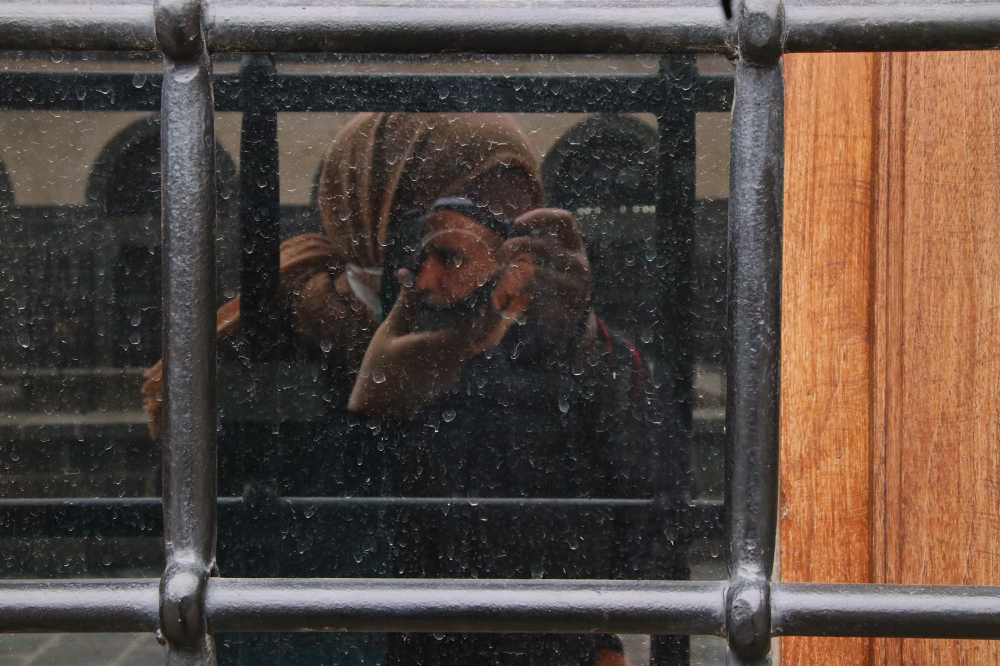
FOTOĞRAFÇI · İSTANBUL
Ayşegül
Kaçar.
Hayata farklı açılardan bakmayı seviyorum.
Her kare, durup yeniden görmenin bir yolu.
KADRAJIMDAN
Gördüğüm dünyadan
küçük seçkiler.
Işığın, mekânın ve insan hikâyelerinin peşinde.
Doğa
01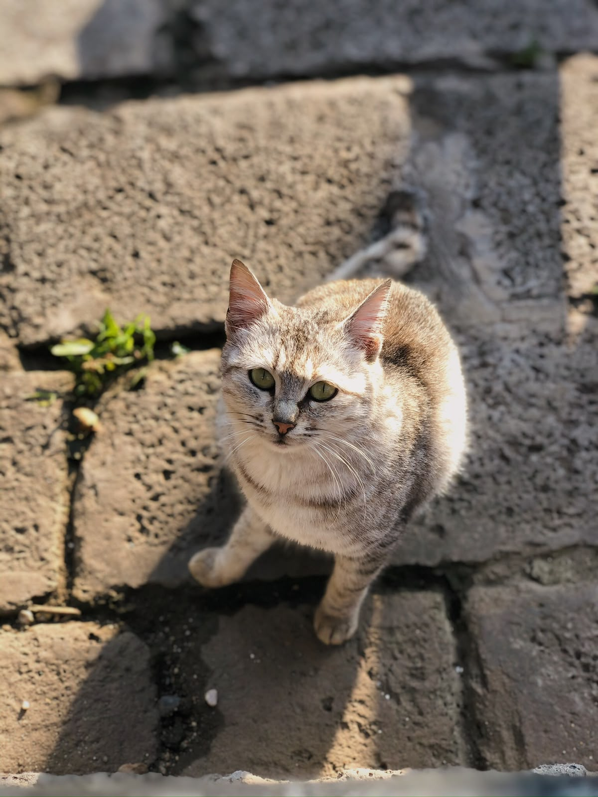
DOĞA · 01Doğa karesi 1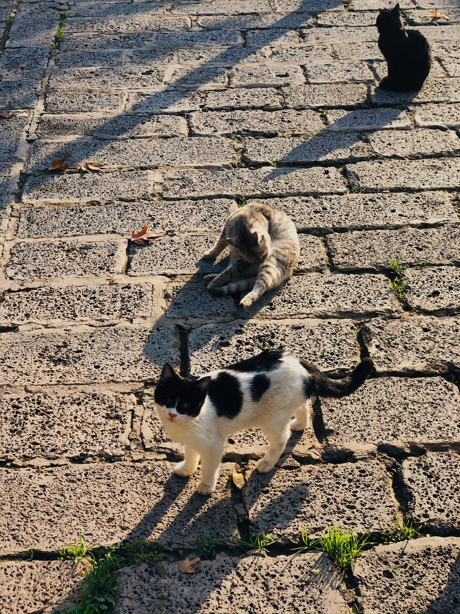
DOĞA · 02Doğa karesi 2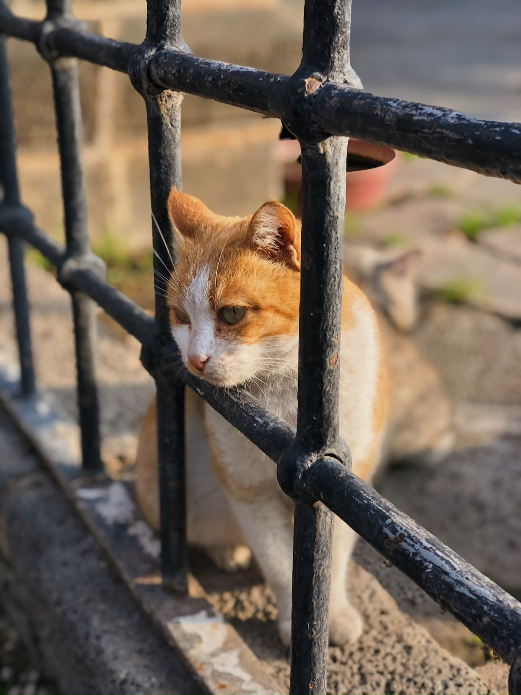
DOĞA · 03Doğa karesi 3Gökyüzü
02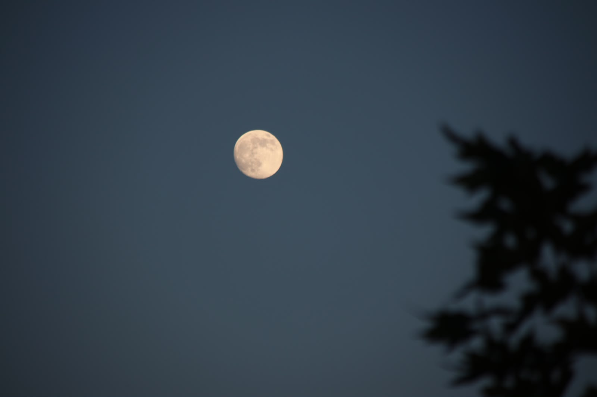
GÖKYÜZÜ · 01Gökyüzü karesi 1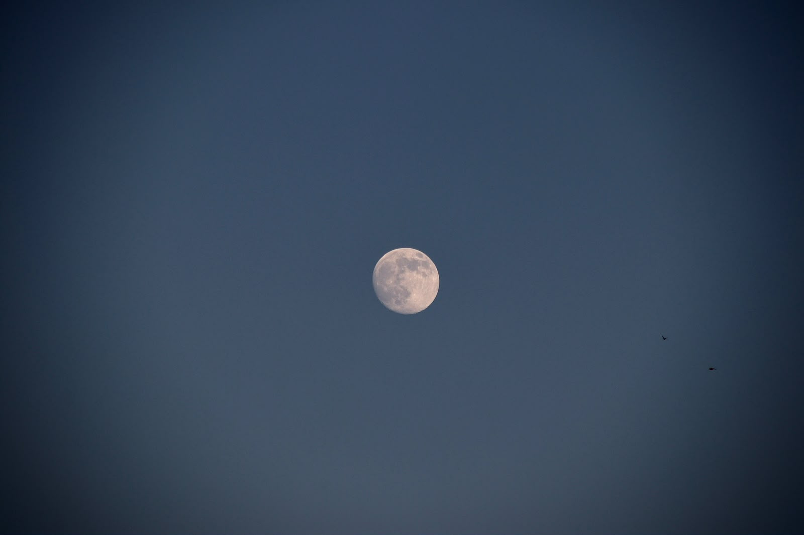
GÖKYÜZÜ · 02Gökyüzü karesi 2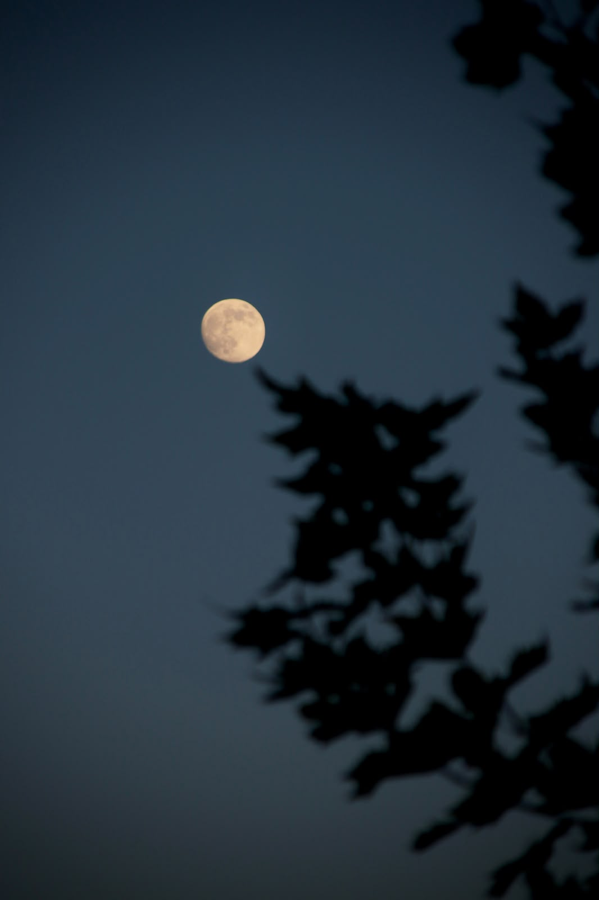
GÖKYÜZÜ · 03Gökyüzü karesi 3Şehir
03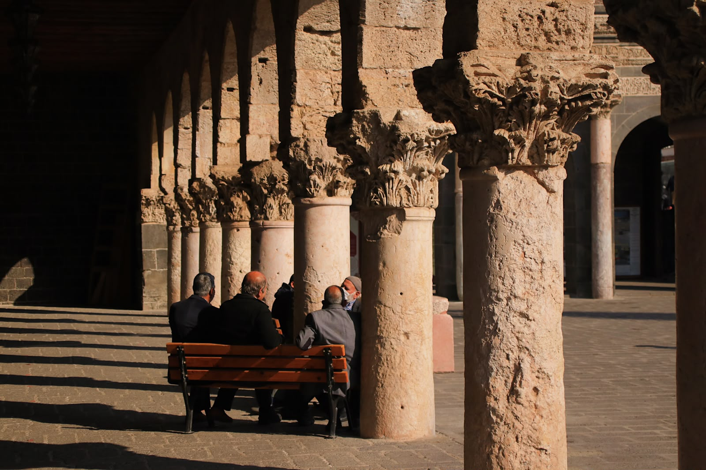
ŞEHİR · 01Şehir karesi 1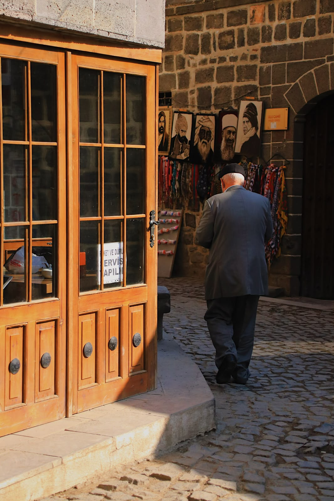
ŞEHİR · 02Şehir karesi 2 ŞEHİR · 03Şehir karesi 3
ŞEHİR · 03Şehir karesi 3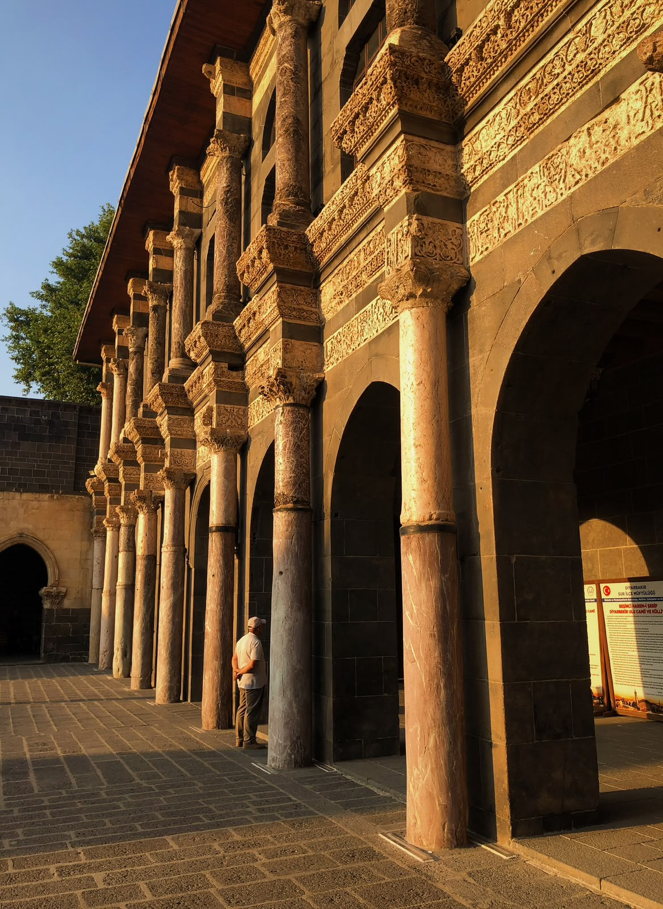
ŞEHİR · 04Şehir karesi 4Stüdyo
04STÜDYO · 01Stüdyo karesi 1
STÜDYO · 02Stüdyo karesi 2
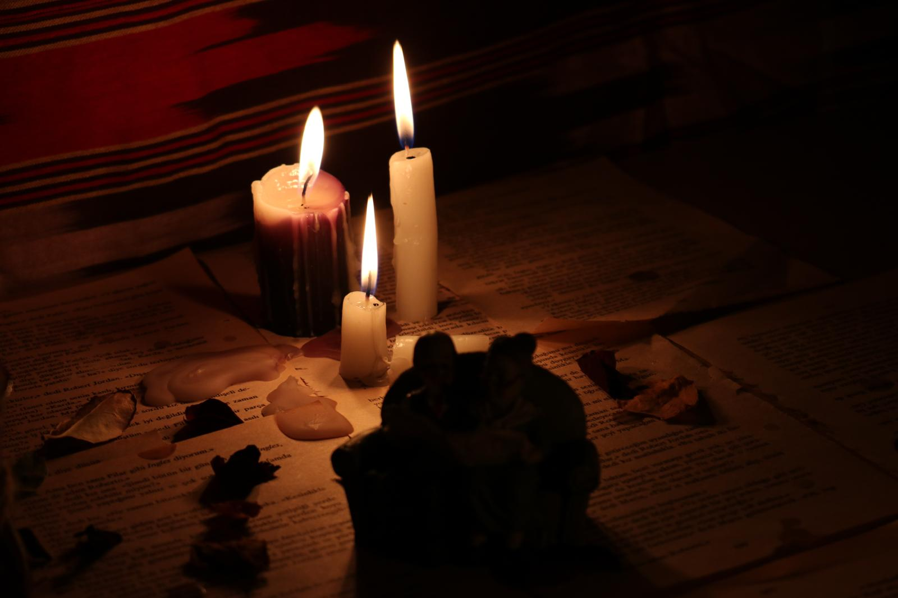
STÜDYO · 03Stüdyo karesi 3MERHABA, BEN AYŞEGÜL
Bazı anlar, yalnızca
bakınca değil hissedince
görünür.
Ayşegül Kaçar, ışığın ve gündelik hayatın içindeki özgün hikâyelerin izini süren bir fotoğrafçıdır. Doğa, şehir ve portre çalışmalarında sade kompozisyonlarla anların duygusunu ve karakterini görünür kılmaya odaklanır.